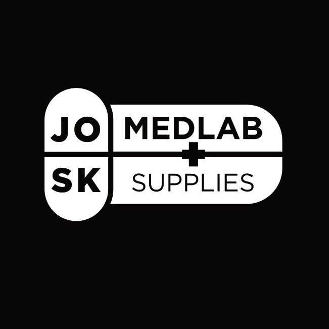
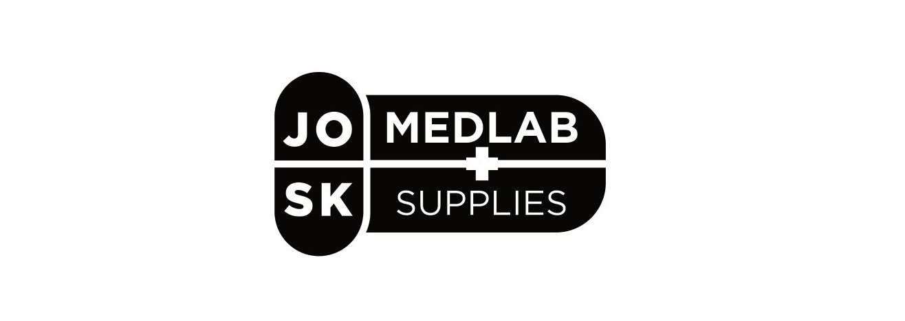
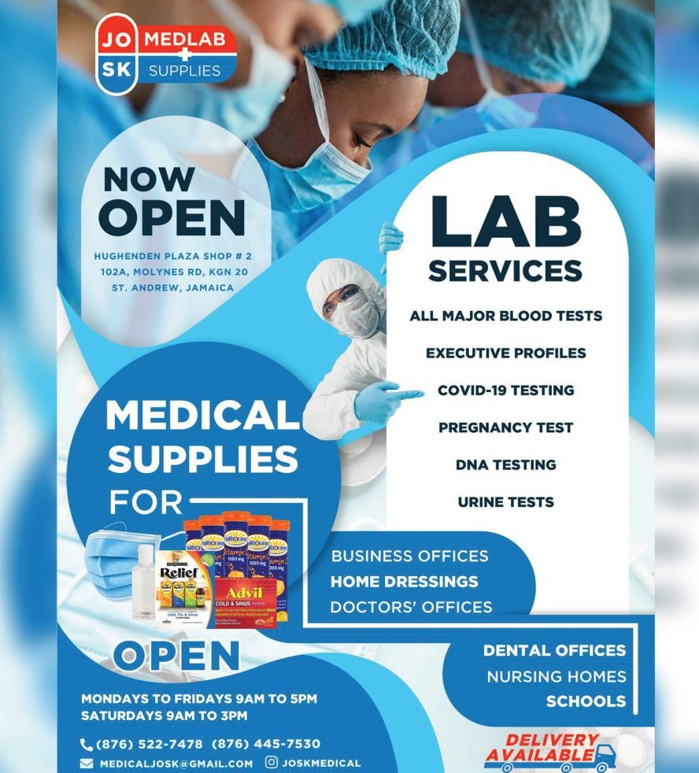
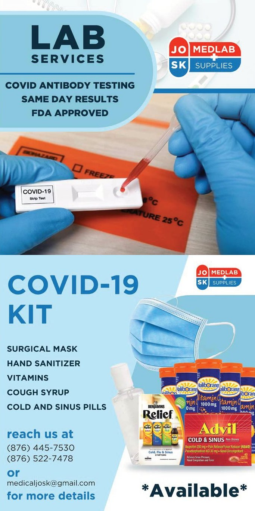
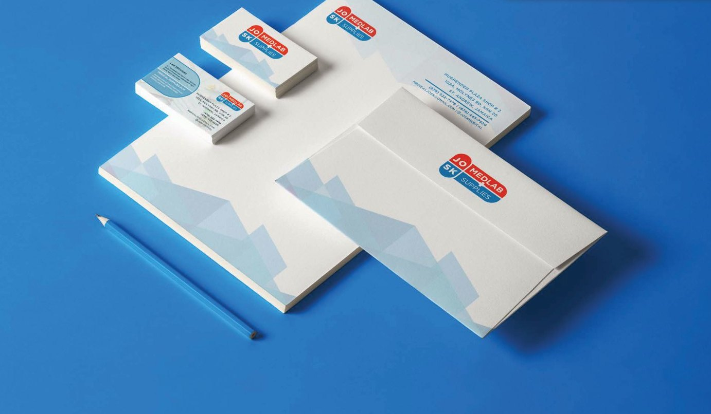

Brief 01
This brand was created for a startup business offering Medical Lab Services and Supplies during the height of the pandemic.
Solution 02
I used blue and red as the main colours of the logo to create a sense of awareness and trust.
Execution 03
Blue then dominates the rest of the collateral designs to convey trust, from lab services flyers to COVID-19 kit posts and stationery.
Logo


Collateral


